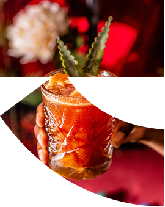

Bougez la souris sur le mot. — Le livre de marque complet :
stratégie, signe, typographie JT Flair, couleur, image, applications, gouvernance. Une seule page.
Une seule forme, six états.
Contour, aplat, trame croisée, lignes, ombre portée nette, découpe photo. Rien d'autre n'est autorisé —
et rien d'autre n'est nécessaire.
A · La forme évide la photo, cernée d'un filet blanc
Bieeen
B · Forme pleine cernée de noir, mot et QR à l'intérieur
C · Répétition serrée — les barres se soudent d'une rangée à l'autre
Contour
Filet égal à 1/12 de la hauteur de barre. Uniquement en petite taille ou sur fond chargé.
Trames
Croisée 45° ou lignes verticales, 1,5 px. Réservées au print une couleur et au packaging.
Ombre portée
Décalage 4,5 % / 5 %, nette, jamais floue. Une seule copie, jamais d'extrusion multiple.
Répétition
Tuile 78 × 91 exacte, aucun espacement. Sens toujours identique — jamais de rotation alternée.
MAISON DE CAFÉ TORRÉFACTION LENTE RÉVÉLER JAMAIS RECOUVRIR MAISON DE CAFÉ TORRÉFACTION LENTE RÉVÉLER JAMAIS RECOUVRIR
00
Sommaire
Tout ce que contient ce livre
01
Partie I — La marque
Chapitre 01
Révéler,jamaisrecouvrir.recouvrir.recouvrir.
Un tréma, c'est deux points au-dessus d'une lettre. Un signe minuscule qui change tout : il sépare, il ouvre,
il fait entendre ce qui était muet.
Nous faisons du café comme on pose un tréma. Un geste précis, presque invisible, qui révèle ce qui était déjà là.
Le grain ne devient pas autre chose : il devient enfin lui-même.
Nous ne cherchons pas le spectaculaire, nous cherchons le juste. Torréfaction lente, origines suivies,
une tasse qui n'a pas besoin d'explication — et quand il en faut une, on la donne, sans jargon.à réécrire
02
Partie I
Chapitre 02
Origine
D'où vient la maison, et pourquoi ça compte encore. Le récit fondateur sert d'argument commercial :
il doit être vrai, court, et racontable en trente secondes.à documenter
An 0
Le comptoir
Une machine d'occasion, six couverts, une seule origine à la carte.
An 2
Le torréfacteur
Passage en torréfaction maison. On arrête d'acheter du café qu'on n'a pas goûté vert.
An 5
Les producteurs
Premiers contrats directs. Le nom du producteur apparaît sur le paquet.
Aujourd'hui
La maison
Trois adresses, un atelier, une école de dégustation ouverte à tous.
03
Partie I
Chapitre 03
Plateforme de marque
Les quatre énoncés opposables. Si une proposition contredit l'un d'eux, elle ne passe pas.
On ne les récrit pas sans passer par la direction.
Mission
Rendre le café lisible
Ce qu'on fait tous les jours.
Vision
La tasse la plus honnête de la ville
Où l'on va.
Promesse
Même exigence, jamais la même tasse
Ce qu'on garantit.
Raison d'être
Un geste juste sur une matière vivante
Pourquoi on existe.
Territoire concurrentiel
POINTUGRAND PUBLICDISTANTCHALEUREUX
TRÉMA
Spécialiste AChaîne BEnseigne C
04
Partie I
Chapitre 04
Valeurs & personnalité
Trois valeurs, un archétype, huit curseurs. Les curseurs servent d'arbitrage :
quand deux options se valent, on choisit celle qui respecte la position du curseur.
Valeur 01
Transparence
Origine, altitude, producteur, date de torréfaction. Tout est écrit. Rien n'est arrondi.
Valeur 02
Lenteur
Une contrainte de production qu'on assume et qu'on explique, pas un argument marketing.
Valeur 03
Hospitalité
Personne ne doit se sentir bête en commandant. Le vocabulaire s'adapte à la personne en face.
Curseurs de personnalité
Sérieux
Joueur
Classique
Contemporain
Discret
Affirmé
Expert
Accessible
Froid
Chaleureux
Local
Global
Sobre
Généreux
Premium
Quotidien
Archétype dominant
L'Artisan
Maîtrise, matière, geste répété. Il montre son atelier plutôt que son diplôme.
Archétype secondaire
Le Guide
Il ne sait pas mieux que vous ce que vous aimez : il vous aide à le nommer.
Ce qu'on n'est pas
Ni le Magicien (promesse de transformation), ni le Souverain (statut, exclusivité),
ni le Rebelle (provocation). Aucun de ces registres dans nos prises de parole.
05
Partie I
Chapitre 05
Audiences
Quatre profils, quatre entrées dans la marque. Chaque support doit savoir à qui il parle
avant de savoir ce qu'il dit.à valider avec les ventes
Cœur de cible
L'habitué·e du quartier
Vient 4 fois par semaine. Veut être reconnu·e, pas conseillé·e. Ton : direct, familier, rapide.
Croissance
Le·la curieux·se
Boit du café filtre depuis six mois. Veut apprendre sans être jugé·e. Ton : pédagogique, jamais condescendant.
Prescription
Le·la pro / barista
Juge sur la fiche technique. Ton : factuel, chiffré, sans adjectif.
B2B
Restaurant & bureau
Achète de la régularité et un service. Ton : vouvoiement, engagements datés, prix clairs.
06
Partie I
Chapitre 06
Architecture de marque
Marque unique, gammes descriptives. On n'invente pas de sous-marque :
le nom du café est toujours celui de son origine ou de son producteur.
TRÉMA
ESPRESSO
FILTRE
ÉDITIONS
ÉCOLE
Modèle « branded house » — la marque mère porte tout.
Signe Tréma toujours à gauche, filet vertical de séparation,
hauteurs de signe optiquement égales. Jamais de fusion de logos.
07
Partie I
Chapitre 07
Ton de voix
On écrit comme on sert : à hauteur d'yeux. Phrases courtes, zéro superlatif gratuit.
Le café est déjà bon — inutile de le sur-vendre.
On dit
« Récolté en octobre, torréfié le 12. »
« Ça a un goût de prune cuite. Franchement. »
« On n'en a plus. Il revient en mars. »
« Dis-nous ce que tu bois d'habitude, on trouve. »
« C'est plus acide que ce que tu bois. Tu veux essayer ? »
On ne dit pas
« Une expérience sensorielle d'exception. »
« Notre passion au service de votre plaisir. »
« Le meilleur café du monde. »
« Un voyage au cœur des terroirs. »
« Nos experts sélectionnent pour vous. »
Longueurs
Titre ≤ 6 mots Paragraphe ≤ 3 phrases Étiquette produit ≤ 40 signes Objet d'email ≤ 42 signes
Personne
« Nous » pour la maison « Tu » en boutique et en story « Vous » en B2B et service client Jamais « on » impersonnel dans un texte officiel
Ponctuation
Point final systématique Exclamation : 1 max par page Jamais de points de suspension Tiret cadratin — pour l'incise
Interdits
Émojis dans les titres MAJUSCULES pour crier Anglicismes non traduits Jeux de mots sur « expresso »
08
Partie I
Chapitre 08
Messages & lexique
Le pitch à trois longueurs, et le vocabulaire imposé. Un mot de la colonne de gauche
ne se remplace jamais par un synonyme « plus vendeur ».
Pitch — 6 mots
Du café qu'on peut expliquer.
Pitch — 25 mots
Tréma torréfie à Paris des cafés d'origine tracés, en petites séries. On écrit tout sur le paquet, et on vous explique en trente secondes.
Pitch — 60 mots
Tréma est une maison de café née d'un comptoir de quartier. Nous achetons en direct, torréfions lentement, et datons chaque lot. Nos trois adresses servent le même café que celui vendu en paquet. Notre école ouvre la dégustation à tout le monde, sans vocabulaire d'initié. Ce qui compte : que vous sachiez ce que vous buvez.
On écrit
Pas
Pourquoi
café de spécialité
café d'exception
Catégorie définie, pas un jugement.
torréfié le 12/03
fraîchement torréfié
Une date est vérifiable.
producteur · coopérative
petit producteur
« Petit » est condescendant.
acidité
fraîcheur, vivacité
Mot technique assumé, expliqué en boutique.
épuisé — retour en mars
victime de son succès
Information, pas argument.
moudre
broyer
Vocabulaire métier correct.
tasse
breuvage, nectar
On parle français simple.
PARTIE II · LE SIGNE · PARTIE II · LE SIGNE · PARTIE II · LE SIGNE · PARTIE II · LE SIGNE ·
09
Partie II — Le signe
Chapitre 09
Anatomie du signe
Un rectangle plein, une découpe en arc, une contre-forme qui file vers la droite.
C'est un T, c'est une voile, c'est le trait du tréma. Il ne se redessine jamais à la main :
on utilise Logo.svg.
Construction
Zone de protection — 1× la hauteur de barre
Aucun élément — texte, image, bord de format — n'entre dans la zone pointillée.
Proportions
Ratio
78 : 91
Hauteur de barre
0,377 H
Rayon de l'arc
0,52 H
Angle de fuite
37°
Tailles minimales
14 px favicon22 px min. écran8 mm min. print18 mm packaging40 mm + enseigne
10
Partie II
Chapitre 10
Verrouillages
Six configurations validées, aucune autre n'existe. L'espace signe ↔ mot est toujours
égal à la hauteur de barre.
TRÉMA
A · Horizontal — usage principal
TRÉMA
B · Vertical — carrés, avatars
TRÉMA
TORRÉFACTEUR · PARIS
C · Avec signature — papeterie, B2B
D · Signe seul inversé — tampon, marquage à chaud
E · Sur aplat encre — jamais sur un gris intermédiaire
F · Sur photo — zone sombre et calme uniquement
Partie II
Le signe comme fenêtre
Le principe le plus fort du système : le signe n'est pas posé sur l'image, il la
découpe. La photo remplit la forme, la forme cadre la photo. C'est ce qui rend une composition
reconnaissable même sans le mot.

Fichier de référence — Union.png
Le signe rempli par la photo, exporté en PNG transparent. Il se pose sur n'importe quel fond
sans retouche : c'est le format à demander au studio pour chaque nouvelle campagne.
Le cadrage à l'intérieur suit une seule règle : le sujet — la main, le verre, la coulée —
occupe la partie large de la forme, jamais la pointe.
PNG 32 bits3000 px min.Fond transparent
Photo découpée
Aplat plein
Trame de points
Aplat encre
trema
Les quatre remplissages
01 · PHOTO — le sujet doit rester lisible dans la découpe
02 · APLAT — noir, encre ou papier, jamais un gris
03 · TRAME — points ou hachures, impression 1 ton
04 · BLANC SUR PHOTO — la forme évide l'image
Règles de découpe
Le signe garde ses proportions 78 : 91, toujours.
La forme peut sortir du format sur un seul bord. La photo à l'intérieur est recadrée, jamais déformée.
Un seul signe-fenêtre par composition.
À retenir
Quand le signe devient fenêtre,
le mot « trema » peut disparaître : la forme suffit à identifier la marque.
Le mot-symbole en minuscules
trema
trema
trema
Minuscules pour le digital et le merch (ton doux, contemporain) ·
capitales TRÉMA pour l'institutionnel et le packaging. Ne jamais mélanger les deux dans une même composition.
11
Partie II
Chapitre 11
Fonds autorisés
Le signe est monochrome, toujours. On choisit la version qui donne le meilleur contraste,
jamais celle qui « fait joli ».
Encre / Papier
Papier / Encre
Lait / Encre
Blanc / Noir
Brume / Lait — 1,8:1
12
Partie II
Chapitre 12
Ce qu'on ne fait pas
Neuf fautes qui reviennent toujours. Si un fichier ressemble à l'un de ces cadres,
il ne part pas en production.
Déformer
Faire pivoter
Recolorer hors palette
Ombre, relief, biseau
Baisser l'opacité
TRÉMA
Coller le mot au signe
Photo chargée
TRÉMA
Autre fonte
Dégradé dans le signe
JT FLAIR · 3 AXES · 28 INSTANCES · JT FLAIR · 3 AXES · 28 INSTANCES ·
Partie III — Typographie
JT FLAIR · SPÉCIMENSURVOLEZ CHAQUE MOTwght 300–1000 / FLAR 0–100 / slnt 0–15
JT FlairSpécimen.TrémaParis—TORRÉFACTION93'93'93'GUJI NATURAL& PRÊT À MOUDRE
13
Partie III
Chapitre 13
Les trois axes
Une seule fonte, trois curseurs continus.
wght donne le poids, slnt l'inclinaison, et FLAR — notre signature —
fait pousser les empattements évasés. Toutes les valeurs intermédiaires sont légitimes.
wght — graisse · 300 → 1000
Trema Trema Tremawght 300 · Light
Trema Trema Tremawght 400 · Regular
Trema Trema Tremawght 500 · Medium
Trema Trema Tremawght 700 · Bold
Trema Trema Tremawght 800 · Heavy
Trema Trema Tremawght 900 · Black
Trema Trema Tremawght 1000 · Extra
14
Partie III
Chapitre 14 — l'axe signature
FLAR 0 → 100
À 0 la fonte est neutre : elle informe, elle se lit partout.
À 100 elle devient la marque. On monte le flare quand on affirme, on le baisse quand on explique.
FLAR 0
Corps de texte, interface, données, mentions légales, fiches techniques.
FLAR 40–60
Titres courants, intertitres, navigation, étiquettes de gamme.
FLAR 100
Marque, packaging, affiche, enseigne, couverture. Une fois par composition.
15
Partie III
Chapitre 15
slnt 0 → 15
Une inclinaison mécanique, pas une italique dessinée.
Réservée aux mots isolés qu'on veut faire bouger : citation, mention « nouveau », prix barré.
Jamais sur un paragraphe entier.
En mouvementslnt 0
En mouvementslnt 5
En mouvementslnt 10
En mouvementslnt 15 · maximum
16
Partie III
Chapitre 16
Les 28 instances
Le fichier variable contient 28 instances nommées : deux familles (Basic = FLAR 0, Extra = FLAR 100),
sept graisses, deux inclinaisons. En web on préfère les valeurs continues ; en print on appelle l'instance nommée.
Basic — FLAR 0
Extra — FLAR 100
17
Partie III
Chapitre 17
Jeu de caractères
Survolez : chaque signe part en wght 1000 / FLAR 100 / slnt 15.
Les cases rouges et noires sont posées au hasard à chaque chargement — c'est le principe du spécimen.
Latin étendu · chiffres tabulaires et proportionnels · ponctuation française complète · symboles monétaires · fractions.
18
Partie III
Chapitre 18
Laboratoire d'axes
Le texte est éditable, les trois curseurs sont libres. Copiez la ligne CSS pour la reporter
dans le code ou dans Figma.
Trèma révèle
19
Partie III
Chapitre 19
Titres & paragraphes
Règle de couple : le titre est en JT Flair, le paragraphe en grotesque neutre.
On ne compose jamais un bloc de texte long en Flair — le flare fatigue au-delà de trois lignes.
Guji Natural
Créer un style est aussi simple que de poser une image. Le titre porte la marque, le paragraphe porte
l'information : il reste neutre, lisible, sans caractère propre. C'est ce contraste qui fait tenir la page.
Interlignage 1,58. Longueur de ligne entre 45 et 75 signes. Alignement à gauche, drapeau à droite,
jamais de justification.
✓ Couple correct
Guji Natural
Créer un style est aussi simple que de poser une image. Le titre porte la marque, le paragraphe porte l'information : il reste neutre, lisible, sans caractère propre. C'est ce contraste qui fait tenir la page.
Interlignage 1,58. Longueur de ligne entre 45 et 75 signes. Alignement à gauche, drapeau à droite, jamais de justification.
✕ Paragraphe en Flair — refusé
Échelle typographique — ratio 1,25 · base 16 px · grille 8 px
Rôle
Fonte
Desktop
Mobile
Interlignage
Approche
wght / FLAR
Usage
Display
JT Flair
132 px
44 px
0,85
−4 %
1000 / 100
Couverture, affiche
Titre 1
JT Flair
62 px
34 px
0,92
−3,5 %
900 / 100
Ouverture de page
Titre 2
JT Flair
38 px
26 px
1,02
−3 %
800 / 60
Sections
Titre 3
JT Flair
24 px
20 px
1,12
−2,5 %
700 / 40
Sous-sections
Chapô
Grotesque
21 px
18 px
1,38
−1,4 %
400 / —
Intro de texte
Courant
Grotesque
16,5 px
16 px
1,58
−0,5 %
400 / —
Paragraphes
Petit texte
Grotesque
13 px
12 px
1,45
0
400 / —
Légendes, crédits
Étiquette
Mono
10 px
10 px
1,7
+18 %
400 · CAPS
Navigation, tableaux, specs
20
Partie III
Chapitre 20
Règles de composition
La micro-typographie française. Ces règles ne sont pas négociables : elles sont la différence
entre un document soigné et un document bricolé.
Espaces
Espace fine insécable avant : ; ! ? Espace insécable avant %, €, °C Pas d'espace avant la virgule et le point
Guillemets
« français » avec espaces fines “anglais” uniquement en second niveau Jamais de "guillemets droits"
Apostrophe
Courbe ’ toujours Jamais l'apostrophe droite ' Réglage automatique dans le CMS
Tirets
— cadratin pour l'incise – demi-cadratin pour les plages (2019–2026) - trait d'union uniquement dans les mots
Capitales
Accentuées : É, À, Ç Pas de mot entier en capitales dans un paragraphe Petites capitales pour les sigles
Chiffres
Espace fine comme séparateur de milliers : 1 800 m Virgule décimale : 12,5 g Chiffres tabulaires dans les tableaux
Veuves & orphelines
Aucun mot seul en fin de paragraphe Insécable entre le chiffre et son unité Titre : jamais coupé sur 1 mot
Césure
Désactivée en titre Autorisée en corps de texte à partir de 3 lignes Jamais deux césures consécutives
21
Partie IV — Couleur
Chapitre 21
Palette
Il n'y en a pas. Le système est strictement monochrome : six valeurs entre le noir et le papier,
et rien d'autre. Toute la couleur du dispositif vient des photographies. Cliquez pour copier.à valider
Le nuancier complet — six valeurs, zéro teinte
Noir
HEX #000000 RGB 0 0 0 CMJN 0 0 0 100 Réservé au signe et au marquage
HEX #F2F2F1 RGB 242 242 241 CMJN 0 0 0 5 Fond par défaut du système
Pourquoi pas de couleur
Le signe est une forme forte : dès qu'on lui ajoute une couleur, on lui retire de la force.
Le noir et blanc oblige à travailler la composition, l'échelle et le vide — pas la décoration.
Et il rend la marque reproductible partout : tampon, marquage à chaud, sérigraphie une couleur, fax, photocopie.
La seule couleur du système vient des photographies. Elles sont donc le seul endroit
où l'on regarde vraiment. C'est voulu.
Répartition — règle 70/25/5
70 % PAPIER
25 % ENCRE
5 %
Les gris intermédiaires ne servent jamais d'aplat de fond :
ils portent du texte secondaire ou des filets, rien d'autre.
Contrastes — WCAG
Combinaison
Ratio
Taille min.
Verdict
Encre / Papier
17,4:1
≥ 12 px
AAA ✓
Noir / Blanc
21:1
≥ 12 px
AAA ✓
Béton / Papier
6,4:1
≥ 12 px
AA ✓
Papier / Encre
17,4:1
≥ 12 px
AAA ✓
Brume / Papier
2,5:1
—
Filets seuls ✕
Lait / Papier
1,1:1
—
Interdit ✕
22
Partie IV
Chapitre 22
Couleur en production
Chaque support a son référentiel. On ne convertit jamais un RVB écran en CMJN à l'aveugle :
on part de la référence du tableau.à compléter avec l'imprimeur
Couleur
Écran (HEX)
Offset (CMJN)
Pantone
Vinyle / signalétique
Textile
Peinture
Noir
#000000
0 0 0 100
Black C
Oracal 070
Pantone Black TCX
RAL 9005
Encre
#111111
0 0 0 96
Black 6 C
Oracal 070
19-0303 TCX
RAL 9004
Béton
#5E5E5E
0 0 0 72
Cool Gray 10 C
Oracal 073
18-0201 TCX
RAL 7043
Brume
#9B9B9B
0 0 0 45
Cool Gray 6 C
Oracal 071
16-3801 TCX
RAL 7040
Lait
#E4E4E3
0 0 0 12
Cool Gray 1 C
Oracal 010
12-4302 TCX
RAL 9002
Papier
#F2F2F1
0 0 0 5
11-0601 TCX
Oracal 010
blanc naturel
RAL 9003
Papiers de référence
Édition : offset non couché 120 g Carte de visite : 600 g, tranche teintée encre Étiquette : kraft brun adhésif Sac : kraft 90 g, impression 1 ton direct
Ennoblissements
Marquage à chaud noir mat sur le signe seul Gaufrage à sec autorisé Jamais de dorure or ou argent Jamais de vernis sélectif brillant Jamais d'encre couleur, même en second passage
Écran
Espace sRGB pour le web Display P3 autorisé sur les visuels photo Mode sombre : fond → #000, texte → Papier
23
Partie V — Image
Chapitre 23
Grille & composition
12 colonnes, gouttière égale au module, marge extérieure double. Le titre s'accroche en haut à gauche,
le signe en bas à droite. Toujours.
NOUVEAUTÉ · ÉTHIOPIE
Guji Natural
1 800 m · lavé prune, jasmin, cacao
Gabarit affiche / post — colonnes visibles en rouge.
Modules
Colonnes 12 / 6 / 2 (desktop / tablette / mobile) Gouttière 24 / 16 / 12 px Marge = 2× gouttière Ligne de base 8 px
Formats maîtres
Affiche 40 × 60 cm · 120 × 176 cm Étiquette 90 × 120 mm Post 1080 × 1350 · Story 1080 × 1920 Carte 85 × 55 mm · A4 210 × 297
Ancrages non négociables
Titre → haut gauche sur marge Signe → bas droite, 1× zone de protection Mentions → bas gauche, 8 pt Jamais de composition centrée, sauf format carré
24
Partie V
Chapitre 24
Direction photo
Lumière naturelle latérale, arrière-plan désaturé, une main dans le cadre.
On photographie le geste, pas le produit posé. Jamais de flash direct, jamais de fond blanc studio.
RÉFÉRENCE · le geste, la main, la coulée
Les 6 règles
01 · Lumière naturelle, fenêtre à 90° 02 · Un geste humain dans 1 photo sur 2 03 · Fond flou, gris ou bois — jamais blanc pur 04 · Focale 50–85 mm, faible profondeur 05 · Cadrage vertical par défaut 06 · Aucune retouche de la couleur du café
Sujets
Le geste · la matière · les mains · le comptoir · le grain vert Les gens de la maison, à leur poste, sans pose.
Interdits
Grains éparpillés sur fond blanc Cœur dans la mousse en gros plan Sourires banque d'images Sac de jute et pelle en bois
Formats & crédits
Livrable : RAW + JPG 3000 px min. Crédit photo obligatoire en légende Droits : cession 3 ans, tous supportsà contractualiser
Traitements
✓ Chaud — usage courant
✓ N&B — archives, portraits, presse
✕ Sur-contrasté / postérisé — jamais
25
Partie V
Chapitre 25
Motifs & matières
Le signe se répète, se coupe, sort du cadre. Six trames autorisées.
Un motif ne cohabite jamais avec une photo dans le même bloc.
01 · Trame serrée — papier de soie, doublures
02 · Trame dégradée — cartes cadeau, éditions
03 · Hachures 45° — signalétique, adhésif
04 · Halo — fonds numériques, stories
05 · Signe rouge XL — éditions limitées
06 · Trame de points — impression 1 ton, kraft
Motif signature — pleine page
26
Partie V
Chapitre 26
Picto- grammes
Formes pleines dessinées sur une grille 1024, sans contour, sans détail inutile.
Ils suivent la couleur du texte — jamais une couleur propre. Survolez pour voir le comportement au rollover.
Construction
Grille 1024 × 1024 Marge de sécurité 80 unités Formes pleines, pas de contour Angles cohérents avec l'arc du signe
Tailles
Écran 24 · 32 · 48 px Print 6 · 10 · 18 mm En dessous de 24 px : simplifier, ne pas réduire
Valeur
Toujours monochrome, couleur du texte. Inversion au survol (fond encre, picto papier). Jamais de picto bicolore.
Interdits
Ajouter un cercle de fond Mélanger avec une autre bibliothèque d'icônes Utiliser un picto seul comme logo Animer autrement qu'en fondu
Partie V
Hiérarchie visuelle
L'ordre de lecture ne se décrète pas, il se fabrique : taille, graisse, position, contraste.
Cette affiche se lit dans l'ordre exact où elle a été construite. Testez : votre œil suit les numéros.
Revenez ici
LIS ÇA.
Tu liras cette ligne ensuite
Tu reviendras lire ce paragraphe seulement si tu veux
en savoir plus. C'est celui qui demande le plus d'effort : beaucoup de texte, petit corps, graisse légère,
interlignage serré. Beaucoup de gens le sautent complètement s'ils ne sont pas accrochés avant.
C'est exactement pour ça qu'on construit une hiérarchie.
Tu liras ça avant le paragraphe.
PUIS ÇA.
Ordre de lecture fabriqué
Titre displaytaille + graisse maximales
Sous-titre capitalesapproche large, isolé
Bloc court en grascontraste de graisse
Sur-titre monoposition haute, inhabituelle
Rappel bas de pageposition terminale
Paragraphe courantdensité maximale, lu en dernier
Les quatre leviers
TAILLE — l'écart doit être franc : jamais deux niveaux à moins de 1,25×
GRAISSE — 400 contre 1000, pas 400 contre 500
POSITION — le haut gauche et le bas gauche sont vus en premier
VIDE — un élément isolé bat un élément gros mais entouré
La règle
Trois niveaux visibles maximum par composition.
Si tout est important, plus rien ne l'est.
Partie V
Le débord
Un registre réservé à l'affiche et à l'événement :
le mot dépasse le format, se coupe, se relit dans la tête. On ne déborde jamais une information
utile — seulement le nom, le thème, la date.
12.03.26
ATELIER TRÉMA 12 RUE DU FOUR PARIS 6e ENTRÉE LIBRE
Affiche événement Bâche, kakémono Couverture d'édition Story pleine hauteur
Jamais sur
Packaging Fiche produit Signalétique directionnelle Document administratif
Règles du débord
Le mot reste reconnaissable : on coupe au maximum 30 % d'un mot.
Une seule graisse pour tout le bloc débordant. Le texte d'information ne déborde jamais.
Contraste
Fond Encre, texte Papier — ou l'inverse.
Une seule valeur pleine, sur un seul mot. Survolez les mots pour voir la variante.
27
Partie V
Chapitre 27
Data-viz
Profils de tasse, courbes de torréfaction, comparatifs. Une seule couleur d'expression par graphique,
jamais de dégradé, jamais de 3D, jamais de camembert.
Profil de tasse — barres
Acidité
7,2
Corps
4,8
Sucrosité
8,1
Amertume
2,6
Courbe de torréfaction
Trait plein = lot en cours · pointillé = référence.
Règles
Une seule valeur pleine par graphique Axes en Brume, 1 px Étiquettes en mono 9 px Valeurs toujours affichées Jamais : camembert, 3D, dégradé, ombre, couleur Alternative texte obligatoire
28
Partie V
Chapitre 28
Motion
Le mouvement imite la coulée : lent au départ, rapide au milieu, arrêt net. Rien ne rebondit, rien ne clignote.
✓ Coulée — cubic-bezier(.16,1,.3,1)
Transition par défaut · 600 ms
✕ Rebond — cubic-bezier(.34,1.56,.64,1)
Interdit — trop joueur pour la marque
✕ Linéaire — linear
Interdit hors défilement continu
Durées
Micro-interaction 180 ms Transition de bloc 600 ms Entrée de page 900 ms Boucle logo 2 400 ms
Animation du signe
L'arc se dessine de gauche à droite, puis la barre tombe. Jamais de rotation, jamais de morphing.
Typographie animée
On anime FLAR 0 → 100, jamais la position lettre à lettre. Le mot s'ouvre, il ne saute pas.
Accessibilité
Tout est coupé sous prefers-reduced-motion. Aucune information portée uniquement par le mouvement.
29
Partie VI — Applications
Chapitre 29
Packaging
Le paquet est notre premier support éditorial. Hiérarchie imposée :
origine → process → poids → date. Le signe est toujours en haut à gauche.maquettes à remplacer par photos
Guji Natural
ÉTHIOPIE · 250 G · 12/03
Paquet 250 g — Filtre
Santa Rita
BRÉSIL · 1 KG · 09/03
Sac 1 kg — Espresso
Lot 07
ÉDITION · 120 EX. · N° ___
Édition limitée numérotée
Gobelet 25 cl
Hiérarchie imposée
1 · Signe (haut gauche) 2 · Origine — Display FLAR 100 3 · Process + altitude — mono 4 · Poids + date de torréfaction 5 · Notes de dégustation — 3 mots max
Rythme de grille : une photo pour deux aplats. Jamais trois photos d'affilée,
jamais trois aplats d'affilée. La grille se lit comme une page.
NOUVEAU
GUJI
12/03
Grille — rythme 1 photo / 2 aplats
Retour du Guji.
EN LIGNE ET EN BOUTIQUE · VENDREDI
Post 1:1 — annonce
Formats
Post 1080 × 1350 (4:5) Story / Reel 1080 × 1920 Vignette 1080 × 1080 Bannière 1500 × 500
Règles d'écriture
Première ligne = l'information, pas l'accroche. 3 hashtags maximum, en fin de texte. Jamais d'émoji dans la première phrase. Alt-text obligatoire.
Ce qu'on ne poste pas
Citations inspirantes sur fond de café. Compte à rebours. Sondages « Team A ou Team B ». Reposts sans crédit.
Partie VI
Templates téléphone
Douze gabarits verticaux, prêts à décliner : story, post plein écran, écran d'accueil,
fiche produit, carte cadeau. Un seul principe par écran — jamais deux idées graphiques en même temps.
trema
01 · Signe-fenêtre centré, mot en pied
12.03 — NOUVEAU LOT
Guji Natural
ÉTHIOPIE · 1 800 M
02 · Photo pleine, texte en surimpression
03 · Motif plein écran — écran de veille, fond de story
04 · Splash — signe seul, aplat encre
Révé- ler, jamais recou- vrir.
MANIFESTE
05 · Citation — display coupé, drapeau à droite
Santa Rita
BRÉSIL · LAVÉ · 250 G TORRÉFIÉ LE 09/03
14,00 €
06 · Fiche produit — photo haute, info basse
CARTE CADEAU
30 €
07 · Carte cadeau — motif en filigrane
SCANNEZ EN BOUTIQUE
08 · QR — fidélité, menu, atelier
09 · Grille — carrousel, sélection
trema trema trema
10 · Débord — mot répété, coupé aux deux bords
AUJOURD'HUI
Guji Natural Santa Rita Décaféiné Sumatra
FILTRE 4,50 · ESPRESSO 2,20
11 · Ardoise du jour — liste, aplat encre
trema
12 · Signe évidé en blanc sur photo
Formats
1080 × 1920 (9:16) Zone sûre : 220 px en haut, 320 px en bas Export PNG ou MP4 < 4 Mo
Règle du un
Un principe graphique par écran : soit la photo, soit le motif, soit le display. Jamais deux ensemble.
Le mot
« trema » en minuscules sur les écrans. Toujours en pied, centré, jamais collé au bord.
Interdits
Dégradé de fond Texte sur la moitié chargée d'une photo Plus de trois niveaux typographiques Toute couleur ajoutée
35
Partie VI
Chapitre 35
Email & bureautique
Là où JT Flair n'est pas disponible, on compose en Arial. Ce n'est pas un pis-aller :
c'est la substitution officielle, et elle doit être propre.
Signature d'email
Prénom Nom Fonction — Tréma +33 0 00 00 00 00 · trema.fr — 12 rue du Four, 75006 Paris
Texte seul, aucune image, aucune citation, aucun logo lourd.
Newsletter
Largeur 600 px Titre Arial Bold 26 px Corps Arial 16/26 1 image max en tête Bouton : rectangle plein Encre, texte Papier, 44 px de haut
Présentation
16:9 · marges 60 px Une idée par diapositive Titre Arial Black, corps Arial Signe en bas à droite sur toutes les pages sauf la couverture Jamais de transition animée
36
Partie VII — Opérations
Chapitre 36
Accessibilité
Une marque lisible par tout le monde. Ces points sont des critères de recette :
un support qui ne les respecte pas n'est pas livré.
Contraste
Texte courant ≥ 4,5:1 Grand texte ≥ 3:1 Éléments d'interface ≥ 3:1 Vérifié à chaque nouvelle association de couleurs
Corps minimum
Écran 16 px Print 9 pt Mentions légales 8 pt Jamais de texte en dessous, même en légende
Alternatives
Alt-text sur toutes les images informatives Transcription des vidéos Sous-titres brûlés sur les stories Data-viz doublée d'un tableau
Interaction
Cible tactile 44 × 44 px Focus visible, jamais supprimé Navigation clavier complète Aucune info portée par la couleur seule
37
Partie VII
Chapitre 37
Checklist de validation
À passer avant tout envoi en production. Douze points, deux minutes.
Un seul « non » suffit à bloquer le fichier.
Signe
☐ Version officielle (non redessinée) ☐ Zone de protection respectée ☐ Taille ≥ minimum ☐ Contraste ≥ 4,5:1
Typographie
☐ JT Flair en titre, grotesque en corps ☐ Échelle respectée ☐ Apostrophes courbes, guillemets français ☐ Aucune veuve ni orpheline
☐ Grille 12 colonnes ☐ Titre haut gauche, signe bas droite ☐ Marges = 2× gouttière ☐ Fonds perdus 3 mm si print
Contenu
☐ Ton de voix respecté ☐ Aucun mot de la liste noire ☐ Mentions légales présentes ☐ Relecture par une 2ᵉ personne
Fichiers
☐ Nommage conforme ☐ Sources archivées ☐ Polices vectorisées si envoi externe ☐ Droits photo à jour
38
Partie VII
Chapitre 38
Gouvernance
Qui décide quoi, et comment on fait évoluer ce document. Une exception non documentée ici
n'existe pas : elle sera refaite au prochain support.à nommer
Décision
Propose
Valide
Délai
Nouveau support courant
Design
Direction artistique
48 h
Nouvelle valeur de gris
Design
Direction + fondateur·rice
2 semaines
Modification du signe
—
Fondateur·rice uniquement
—
Nouveau nom de produit
Torréfaction
Direction
1 semaine
Partenariat / co-branding
Commerce
Direction + DA
3 semaines
Exception à ce guide
Qui que ce soit
DA — puis inscrite ici
1 semaine
Cycle de révision
Relecture complète : 1 fois par an Correctifs mineurs : en continu Version majeure : changement de numéro + note de version en pied de page
Nommage des fichiers
trema_[support]_[nom]_[format]_[version].[ext] ex. trema_pack_guji_250g_v03.ai Minuscules, underscores, pas d'accent, pas d'espace.
En cas de doute
On choisit la version la plus sobre. On documente la question. On demande avant, pas après.
39
Partie VII
Chapitre 39
Ressources
Tout part de ces fichiers. On ne recrée jamais un asset à la main.
Fichier
Format
Usage
Logo.svg
SVG
Signe — toutes tailles, écran & print
Frame.svg · Frame-1.svg
SVG
Variantes de tracé, grandes tailles
Frame-2.svg
SVG
Signe + ombre décalée — usage éditorial
Group 71.svg
SVG
Tracé de construction — documentation seule
image 349.svg
SVG
QR code au signe
JT Flair — OTF
OTF
Print · Illustrator, InDesign
JT Flair — TTF
TTF
Bureautique, Figma
GTFlaireVF.ttf
TTF variable
Web — 3 axes, 28 instances
image 347.jpg
JPG
Photo de référence — direction artistique
Licence : vérifier la portée de la licence de JT Flair
(web / desktop / app / diffusion externe) avant de partager ce document ou les fichiers de fonte.à vérifier
QR au signe — cœur occupé par le symbole, contraste ≥ 4:1, taille minimale 25 mm.
40
Partie VII
Chapitre 40
Glossaire
Le vocabulaire de ce document, pour que tout le monde parle la même langue.
Axe variable
Un curseur continu à l'intérieur d'une fonte (ici wght, FLAR, slnt). Toutes les valeurs intermédiaires sont valides.
Flare
L'évasement en bout de fût d'une lettre. Notre axe signature : à 100, la fonte devient reconnaissable entre mille.
Zone de protection
L'espace vide minimum autour du signe. Elle protège sa lisibilité, elle n'est pas décorative.
Verrouillage (lockup)
Une association figée signe + texte. Elle ne se recompose pas : on utilise le fichier.
Approche
L'espace entre les lettres d'un mot. Négative sur les grands corps, neutre en texte courant.
Couleur d'expression
Il n'y en a aucune. Toute demande de couleur passe par la gouvernance — et la réponse par défaut est non.